Now that you know a little bit about the basics of electricity, let’s look at how it interacts with various electronic components and devices. Electronic components are the various parts that control electric current in a circuit to make our designs a reality. Just as the various parts of a car work together to provide fuel, power, and mobility to allow us to drive, electronic components work together to control and harness electricity to help us create useful devices.
Throughout this book, I’ll explain specialized components as we use them. The following sections describe some of the fundamental components.
The Resistor
Various components, such as the Arduino’s LED, require only a small amount of current to function—usually around 10 mA. When the LED receives excess current, it converts the excess to heat—too much of which can kill an LED. To reduce the flow of current to components such as LEDs, we can add a resistor between the voltage source and the component. Current flows freely along normal copper wire, but when it encounters a resistor, its movement is slowed. Some current is converted into a small amount of heat energy, which is proportional to the value of the resistor. Figure 3-1 shows an example of commonly used resistors.
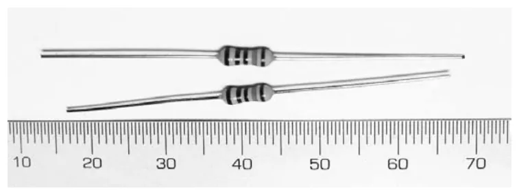
Resistance
The level of resistance can be either fixed or variable. Resistance is measured in ohms (Ω) and can range from zero to thousands of ohms (kiloohms, or k Ω) to millions of ohms (megohms, or M Ω).
Reading Resistance Values
Resistors are very small, so their resistance value usually cannot be printed on the components themselves. Although you can test resistance with a multimeter, you can also read resistance directly from a physical resistor, even without numbers. One common way to show the component’s resistance is with a series of color-coded bands, read from left to right, as follows:
First band Represents the first digit of the resistance
Second band Represents the second digit of the resistance
Third band Represents the multiplier (for four-band resistors) or the third digit (for five-band resistors)
Fourth band Represents the multiplier for five-band resistors
Fifth band Shows the tolerance (accuracy)
Table 3-1 lists the colors of resistors and their corresponding values. The fifth band represents a resistor’s tolerance. This is a measure of the accuracy of the resistor. Because it is difficult to manufacture resistors with exact values, you select a margin of error as a percentage when buying a resistor. A brown band indicates 1 percent, gold indicates 5 percent, and silver indicates 10 percent tolerance.
Figure 3-2 shows a resistor diagram. The yellow, violet, and orange resistance bands are read as 4, 7, and 3, respectively, as listed in Table 3-1. These values translate to 47,000 Ω, more commonly read as 47 kΩ.
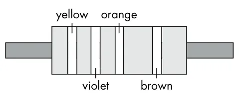
| Color | Ohms |
|---|---|
| Black | 0 |
| Brown | 1 |
| Red | 2 |
| Orange | 3 |
| Yellow | 4 |
| Green | 5 |
| Blue | 6 |
| Violet | 7 |
| Gray | 8 |
| White | 9 |
Chip Resistors
Surface-mount chip resistors display a printed number and letter code, as shown in Figure 3-3, instead of color stripes. The first two digits represent a single number, and the third digit represents the number of zeros to follow that number. For example, the resistor in Figure 3-3 has a value of 10,000 Ω, or 10 kΩ.
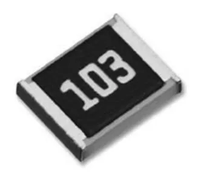
Multimeters
A multimeter is an incredibly useful and relatively inexpensive piece of test equipment that can measure voltage, resistance, current, and more. For example, Figure 3-4 shows a multimeter measuring a resistor.
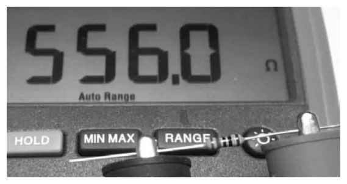
If you are colorblind, a multimeter is essential. As with other good tools, purchase your multimeter from a reputable retailer instead of fishing about on the Internet for the cheapest one you can find.
Power Rating
The resistor’s power rating is a measurement of the power, in watts, that it will tolerate before overheating or failing. The resistors shown in Figure 3-1 are 1/4-watt resistors, which are the most commonly used resistors with the Arduino system.
When you’re selecting a resistor, consider the relationship among power, current, and voltage. The greater the current and/or voltage, the greater the resistor’s power.
Usually, the greater a resistor’s power rating, the greater its physical size. For example, the resistor shown in Figure 3-5 is a 5-watt resistor, which measures 26 mm long by 7.5 mm wide.
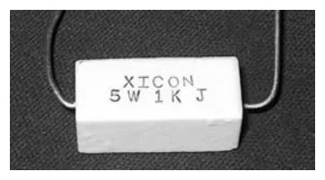
The Light-Emitting Diode
The LED is a very common, infinitely useful component that converts electrical current into light. LEDs come in various shapes, sizes, and colors. Figure 3-6 shows a common LED.
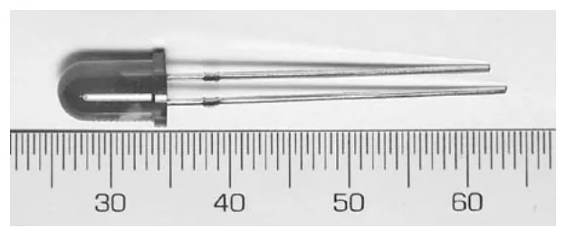
Connecting LEDs in a circuit takes some care, because they are polarized; this means that current can enter and leave the LED in one direction only. The current enters via the anode (positive) side and leaves via the cathode (negative) side, as shown in Figure 3-7. Any attempt to make too much current flow through an LED in the opposite direction will break the component.
Thankfully, LEDs are designed so that you can tell which end is which. The leg on the anode side is longer, and the rim at the base of the LED is flat on the cathode side, as shown in Figure 3-8.
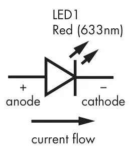
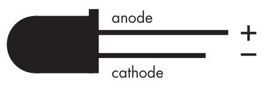
When adding LEDs to a project, you need to consider the operating voltage and current. For example, common red LEDs require around 1.7 V and 5 to 20 mA of current. This presents a slight problem for us, because the Arduino outputs a set 5 V and a much higher current. Luckily, we can use a current-limiting resistor to reduce the current flow into an LED. But which value resistor do we use? That’s where Ohm’s Law comes in.
To calculate the required current-limiting resistor for an LED, use this formula:
R = (Vs − Vf) ÷ I where Vs is the supply voltage (Arduino outputs 5 V); Vf is the LED forward voltage drop (say, 1.7 V), and I is the current required for the LED (10 mA). (The value of I must be in amps, so 10 mA converts to 0.01 A.)
Now let’s use this for our LEDs—with a value of 5 V for Vs , 1.7 V for Vf , and 0.01 A for I. Substituting these values into the formula gives a value for R of 330 Ω. However, the LEDs will happily light up when fed current less than 10 mA. It’s good practice to use lower currents when possible to protect sensitive electronics, so we’ll use 560 Ω, 1/4-watt resistors with our LEDs, which allow around 6 mA of current to flow.
The Solderless Breadboard
Our ever-changing circuits will need a base—something to hold them together and build upon. A great tool for this purpose is a solderless breadboard. The breadboard is a plastic base with rows of electrically connected sockets (just don’t cut bread on them). They come in many sizes, shapes, and colors, as shown in Figure 3-10.
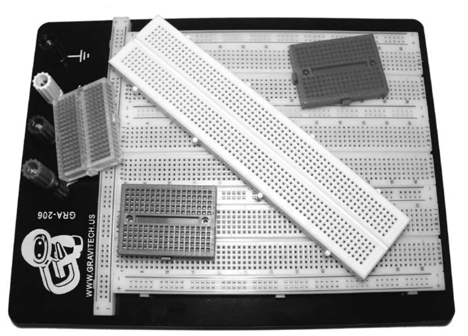
The key to using a breadboard is knowing how the sockets are connected—whether in short columns or in long rows along the edge or in the center. The connections vary by board. For example, in the breadboard shown at the top of Figure 3-11, columns of five holes are connected vertically but isolated horizontally. If you place two wires in one vertical row, then they will be electrically connected. By the same token, the long rows in the center between the horizontal lines are connected horizontally. Because you’ll often need to connect a circuit to the supply voltage and ground, these long horizontal lines of holes are ideal for the supply voltage and ground.
When you’re building more complex circuits, a breadboard will get crowded and you won’t always be able to place components exactly where you want. It’s easy to solve this problem using short connecting wires, however. Retailers that sell breadboards usually also sell small boxes of wires of various lengths, such as the assortment shown in Figure 3-12.
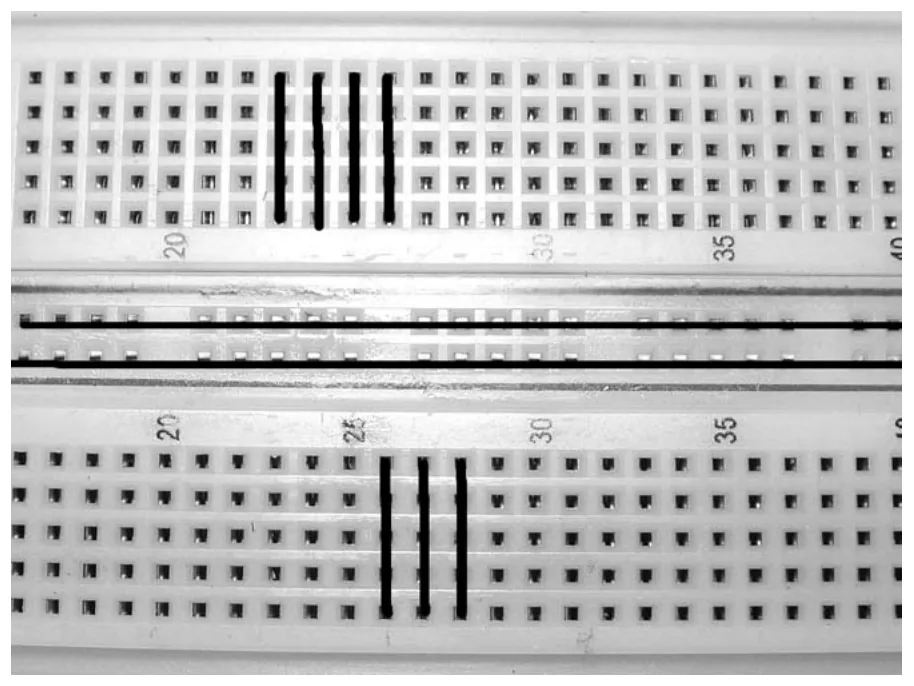
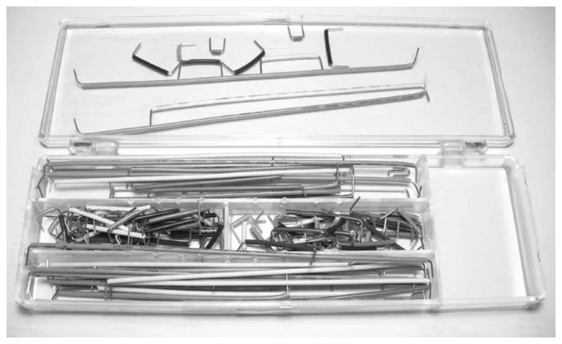